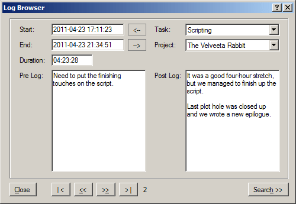

Log Browser
The Log Browser lets you scroll through timekeeper entries you've created, and edit them if need be. For example, if you started the timer intending to work on one task or project, but ended up working on another, you can change that here. You can also change the start and end times of a task or edit the entries themselves after the fact.

Log Browser Features
- Edit Times. Change the start or end time of a task. You can change the end time by either editing the end time directly or by manually entering a new duration.
- Close Gaps. If you worked on a task, then forgot to start the timer again immediatly afterwards, you might want to edit the second entry to eliminate the gap. Use the
and buttons to automatically set the start time to the end time of the previous entry or the end time to the start time of the subsequent entry. (If no subsequent entry exists, it sets it to the current date/time.)
- Edit Task or Project. Using the drop down controls, assign this timekeeper entry to a new task or project.
- Edit Annotations. Edit either the pre or post entry annotations directly in the box.
- Browser Buttons. You can scroll through entries using the Previous and Next buttons at the bottom. You can jump directly to the first or last entries too.
- Search. Click the search button to search for a text string within a range of dates. By default, the date range covers your entire data set.
Help on Controls